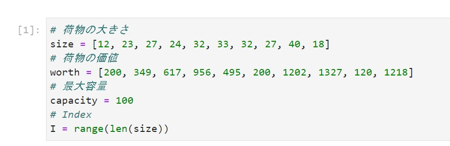
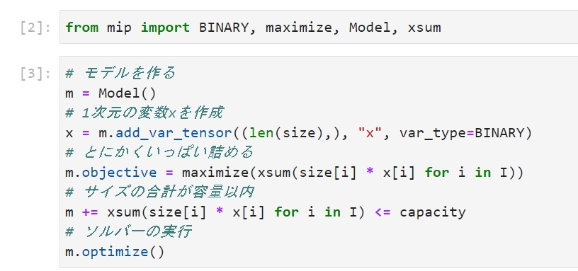
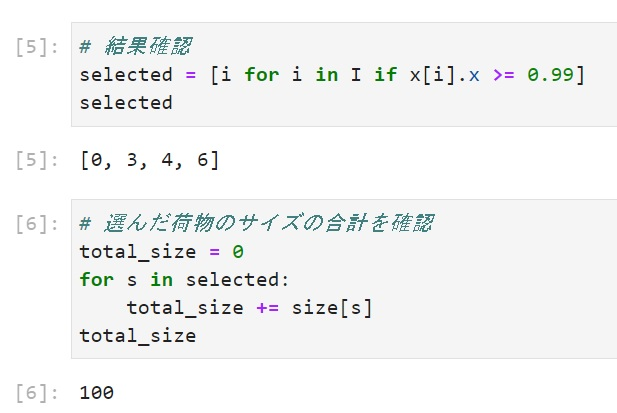
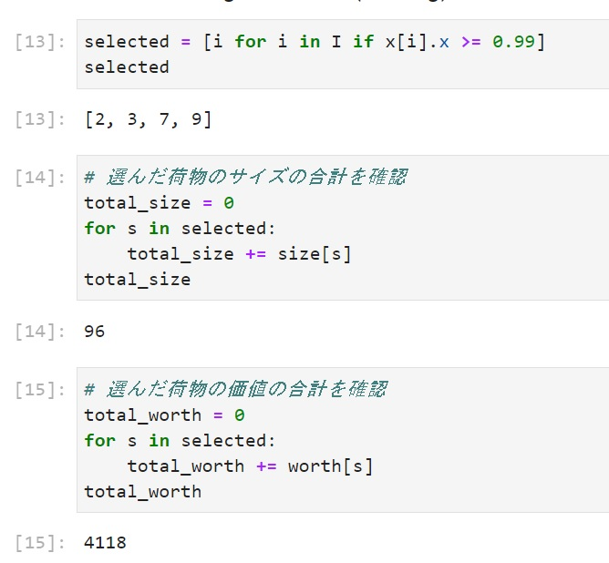

鉄は熱いうちに打て
=============================
Pythonで数理最適化の実装をしてみた¶
2021-12-24
この記事は PyLadies Japan Advent Calendar 2021 - Adventar の24日目です。
Merry Christmas!
今年もいよいよあと1週間となりました。今年の目標など達成できたでしょうか？ 私は年始にいくつか立てた目標がことごとく微妙に達成できませんでした。 来年は達成できるように今年よりもうちょっと頑張ろうと思います。
さて、今日はPythonの話ということで、数理最適化を実装した話を書きます。 まだまだ初心者で、ちょっとずつ勉強しています。クイズみたいな問題も多いので、結構楽しいです。 私の理解では、「何かを行うときに、いろんな方法がある中で、最も良い方法（最適な解）を選ぶ手法」と思っています。
ナップサック問題¶
今回は、ナップサックに荷物を詰める問題を解いてみます。今回は、Python-MIPライブラリーを使います。 pip install -U mip でインストールできます。 PYTHON-MIPの 例題 を参考に書きました。
100の容量があるナップサックに10個の荷物の中から目的にあった荷物を詰めます。各荷物はサイズ（リストsize）と価値（リストworth）を持っています。サイズと価値は乱数から適当に作りました。
{kind=link}
容量いっぱいに詰める¶
とにかく容量いっぱいに詰めてみます。
{kind=link}
結果を見てみると0, 3, 4, 6のインデックスの荷物を詰めるとちょうど100になるみたいです。
{kind=link}
ちょっと実装を見てみます。 「# 1次元の変数xを作成」のところですが、結果に0か、1になる10個変数を作っています。
x = m.add_var_tensor((len(size),), "x", var_type=BINARY)
「# とにかくいっぱい詰める」のところは、リストsizeとxの各インデックスの値を掛けています。xには0か1が入っているので、1の場合（選ぶ場合）だけサイズが計算される式になります。選んだ荷物のサイズの合計をxsumで求めています。これが最大になるような解を求めるのが今回の目的です。
m.objective = maximize(xsum(size[i] * x[i] for i in I))
「# サイズの合計が容量以内」のところは、条件を指定しています。選ばれた荷物のサイズの合計が最大容量以下（<=）という条件を付けています。
m += xsum(size[i] * x[i] for i in I) <= capacity
「# ソルバーの実行」のところでそれまでに指定した目的と条件を使って解決します。
m.optimize()
価値が最大になるように詰める¶
同じように容量以内で荷物の価値が最大になるように詰めてみます。

先ほどと違うのは m.objective = maximize(xsum(worth[i] * x[i] for i in I)) の部分ですね。 今回は、2, 3, 7, 9のインデックスの荷物を詰めると価値が最大になります。目的によって選ぶ荷物が変わりますね。
{kind=link}
まとめ¶
幸運なことに会社で最適化の勉強会を開いていただいているのですが、最初のころは課題を写しただけで、どこで何をしているか全然理解できなかったのです。よくわからない中、何回も同じような問題を解いていたら段々慣れてきました。 「最適化」か「組合せ最適化」とかで検索したらたくさん課題は出てくるので、答えを見ないで解いていったら慣れてきます。結構楽しいで、老化防止にもおすすめです。
参照¶
数理最適化について、もうちょっと詳しく知りたい場合は、以下をお勧めします。